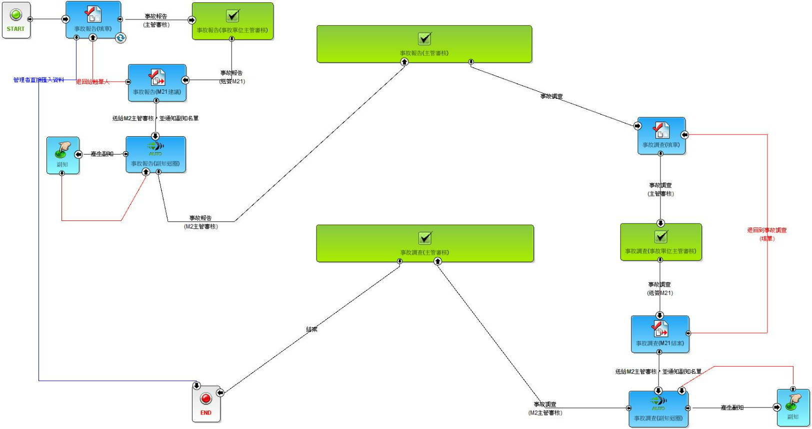
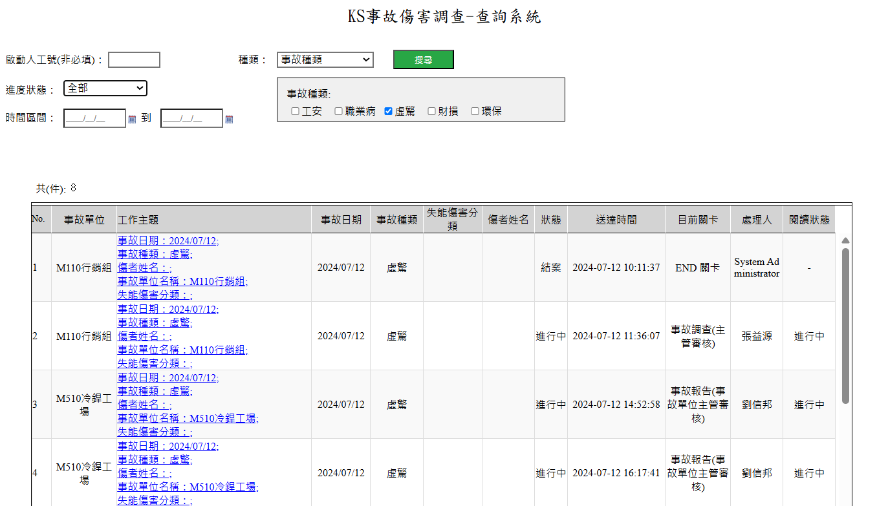

公安事故調查流程設計
1. 工安事故發單位填寫事故相關資訊。
2. 公安單位收到事故通知單後，立即展開事故調查，所有資訊皆可記錄於表單上。
3. 調查完成後，可透過系統將調查報告陳和指定層級主管。
4. 結案後，自動歸檔並保存圖面，做為追溯資料。
公安事故調查系統
事故發生單位、公安單位、相關單位皆可透過該系統清楚掌握工安事故的發生、調查過程及解決方案。


公安事故調查查詢報表
可透過報表，追溯派所有事故單的歷史資料，以及所有工安事故調查目前的處理進度。